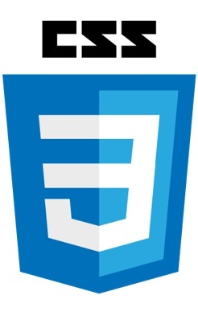

Son los 3 pilares fundamentales de desarrollo web que trabajan junto para crear páginas web dinámicas e interactivas .
HTML se encarga de la estructura y el contenido , CSS del diseño y la presentación, y Java script de la interactividad y la funcionalidad.
Ese lenguaje del marcado que define la estructura y el contenido de una página web Utiliza etiquetas para determinar diferentes elementos como párrafos, encabezados, imágenes, enlaces, etc.
Es un lenguaje de destinos que se utiliza para controlar la presentación de una página web punto permite definir aspectos como los colores , fuentes , tamaños como imágenes , etcétera ETC, de los elementos HTML.
Es un lenguaje de programación que permite agregar funcionalidad interactividad a una página web punto permite manipular elementos HTML , responder a eventos del usuario y realizar cálculos, etc.
Estructura de la casa. Es como los cimientos, las paredes, techos, y distribución de las habitaciones. HTML define la estructura básica de una página web: qué elementos hay (título, párrafos, botones, imágenes, etc.), pero sin preocuparse por cómo se ven
Decoración y estilo de la casa. Es la pintura de las paredes, el tipo de piso, los muebles, las cortinas, el diseño de la cocina. CSS se encarga de cómo se ve la página: colores, fuentes, márgenes, alineaciones, estilos responsivos.. lo visual.
Los sistemas eléctricos y electrónicos de la casa. Es como los interruptores que encienden luces, las puertas automáticas, el termostato inteligente. JavaScript añade funcionalidad e interactividad haciendo que pasen cosas como respuesta a un evento.
"Los tres lenguajes son esenciales para el desarrollo web, y cada uno juega un papel crucial en la creación de páginas web modernas y funcionales."